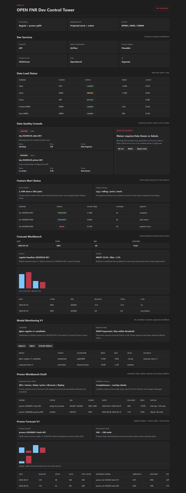

OPEN FNR / Sprint 8 / Promo Uplift Forecast V1
Отчёт по UI-тестированию и тестированию бизнес-процессов
Отчёт фиксирует тестовый цикл Sprint 8: расчёт promo uplift отдельно от regular forecast, total forecast, reference promos и post-promo stock preview.
Аннотация теста
Мы тестируем Promo Uplift Forecast V1, потому что промо должно влиять на прогноз как отдельный эффект, а не загрязнять регулярный спрос. Метод проверки объединяет API-контракт, формулу total forecast, BPMN/DMN/CMMN процесса, UI screenshot и regression tests. Такой способ нужен, чтобы доказать: regular baseline, uplift и total forecast хранятся и отображаются отдельно, а пользователь понимает источник промо-эффекта.
Автоматические проверки
| Проверка | Что делаем | Зачем | Ожидаемый результат | Фактический результат |
|---|---|---|---|---|
python -m pytest |
Запускаем backend, promo forecast, process и encoding тесты. | Проверить uplift, total forecast, reference promos и BPMN/DMN/CMMN. | Все тесты проходят. | 63 passed |
npm.cmd run build |
Собираем React/Vite UI. | Проверить Promo Forecast V1 экран. | Сборка завершается без ошибок. | vite build completed |
| Playwright screenshot | Открываем UI и снимаем full-page screenshot. | Зафиксировать визуальный результат promo forecast. | Скриншот содержит regular/uplift/total и reference promos. | Скриншот сохранён |
UI-тестирование
| Шаг | Что делаем | Зачем | Почему именно так | Ожидаемый результат | Фактический результат |
|---|---|---|---|---|---|
| 1 | Открываем Promo Forecast V1. | Проверить, что Promo Planner видит расчёт промо-эффекта. | После validation промо должно переходить к forecasted-состоянию. | Отображается promo id и статус forecasted. | Отображается. |
| 2 | Проверяем regular/uplift/total. | Убедиться, что uplift отделён от regular forecast. | Иначе промо исказит регулярную модель спроса. | Видны regular, uplift и total по дням. | Видны. |
| 3 | Проверяем reference promo list. | Понять, на каких аналогах основан uplift. | Пользователь должен доверять промо-эффекту и видеть объяснение. | Видны promo-ref, similarity, discount и uplift factor. | Видны. |
| 4 | Проверяем post-promo stock preview. | Показать влияние uplift на будущий запас. | Промо-прогноз должен сразу готовить вход для replenishment. | Видны значения stock после промо-дней. | Видны. |
Тестирование бизнес-процессов
| Процесс | Шаг | Что делаем | Зачем | Ожидаемый результат | Фактический результат |
|---|---|---|---|---|---|
promo_forecast_process |
1 | Стартуем процесс из статуса ready_for_forecast. | Только валидированное промо должно идти в uplift. | BPMN содержит start event Promo ready for forecast. | Подтверждено XML-тестом. |
promo_forecast_process |
2 | Загружаем regular baseline на период промо. | Uplift считается относительно обычного спроса. | BPMN содержит Load regular baseline for promo period. | Подтверждено XML-тестом. |
promo_forecast_process |
3 | Выбираем reference promos и считаем uplift. | Аналоги объясняют промо-эффект и fallback к категории. | BPMN содержит Select reference promos и Calculate promo uplift. | Подтверждено XML-тестом и API-тестом. |
promo_forecast_process |
4 | Считаем total forecast. | Пользователь и replenishment получают итоговый спрос. | Total = regular + uplift. | Подтверждено формульным тестом. |
promo_forecast_quality_decision |
1 | Проверяем quality decision. | Плохой uplift должен уходить в warning review. | DMN содержит uplift_accuracy_smoke и reference_count. | Подтверждено XML-тестом. |
promo_forecast_anomaly_case |
1 | Проверяем anomaly case. | При сомнительном uplift нужен review reference promos и ручной draft adjustment. | CMMN содержит Review reference promos и Adjust uplift draft. | Подтверждено XML-тестом. |
Скриншоты

Скриншот: Promo Forecast V1 после Sprint 8.
Вывод
Sprint 8 test cycle passed. Promo uplift считается отдельно от regular, total forecast прозрачен, reference promos объясняют uplift, а post-promo stock preview готовит переход к replenishment.
Ограничение: uplift представлен baseline/sample model contract; физический scoring на полном промо-шарде будет расширяться дальше.